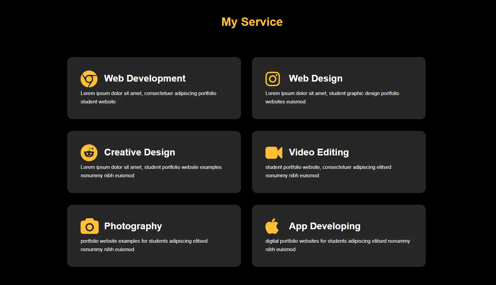

HTML & CSS Questions
1. What is Doctype in HTML?
1M
2. Difference between Tags and Elements with Example?
1M
3. Which are new tags in html5?
1M
4. What are HTML Attributes with One or Two Examples?
1M
5. List Types in HTML?
1M
6. Template for HTML Structure?
1M
7. What is CSS?
1M
8. What is the Box Model in CSS?
1M
9. Forms in Html with some Input and some validition like required,maxlength etc.
2M
10. What is syntax of keyframes with example ?
2M
11. Different Types of Selectors in CSS?
1M
12. How Many Types of CSS to Add in Your HTML?
1M
13. What Are Media Queries? Explain with Example
2M
14. What is the use of usemap in image mapping with example?
2M
15. Perform below task:
Also apply some animation with keyframes

12